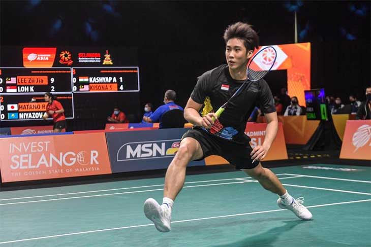

Giải cầu lông vô địch Đồng đội châu Á 2022 khép lại ngày thi đấu thứ 2 khá ấn tượng với chiến thắng tuyệt đối của Malaysia trước Singapore có VĐTG đơn nam.
Một kết quả khá sốc xảy ra ở ngày thi đấu thứ 2 của Giải cầu lông vô địch Đồng đội châu Á 2022 tại Malaysia, khi chủ nhà nghiền nát kình địch Singapore 5-0 ở nội dung Đồng đội nam. Thắng trận này, Malaysia coi như đặt một chân vào bán kết với tư cách một trong hai đội đầu bảng B. Suất còn lại là cuộc đua tranh giữa Nhật với đảo sư tử, trong lúc Kazakhstan lộ nguyên hình kẻ lót đường.
Tâm điểm đại chiến là giữa ĐKVĐTG Loh Kean Yew hiện xếp hạng 12 thế giới của Singapore với ĐKVĐ đơn nam SEA Games người Malaysia Lee Zii Jia đang đứng thứ 7 thế giới. Vượt quá dự kiến của nhiều người, anh chàng vừa gặp rắc rối với Liên đoàn cầu lông Malaysia đã dễ dàng khuất phục đối thủ đồng hương thời thơ ấu với tỷ số 21-6, 21-14 chỉ qua 30 phút. Trước những cú dứt điểm sắc như dao cạo của Lee Zii Jia, Loh Kean Yew tỏ ra thiếu chính xác ở những cú đánh cầu xa và đập cầu thường không qua lưới.